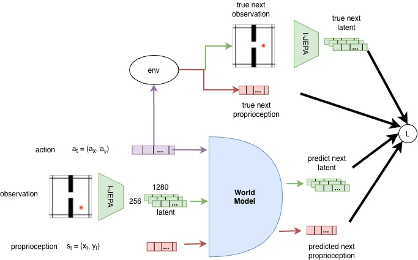
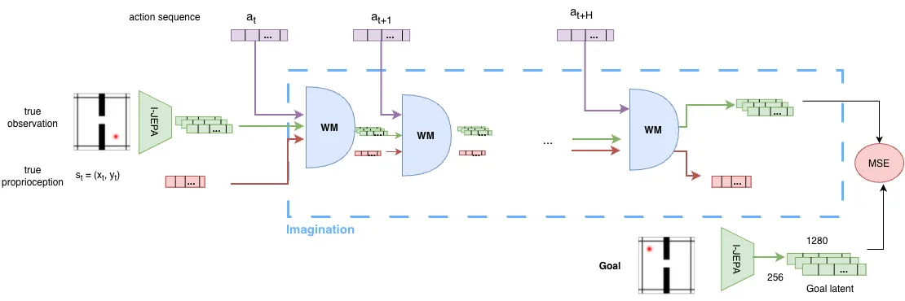
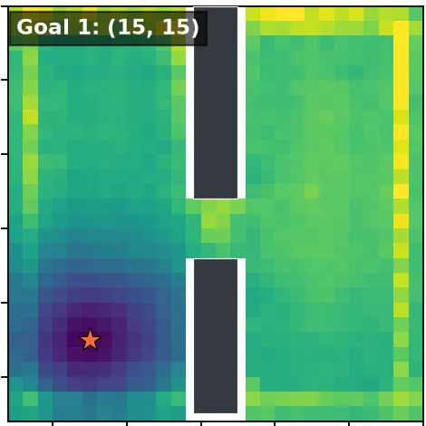
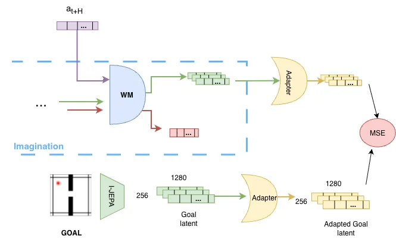
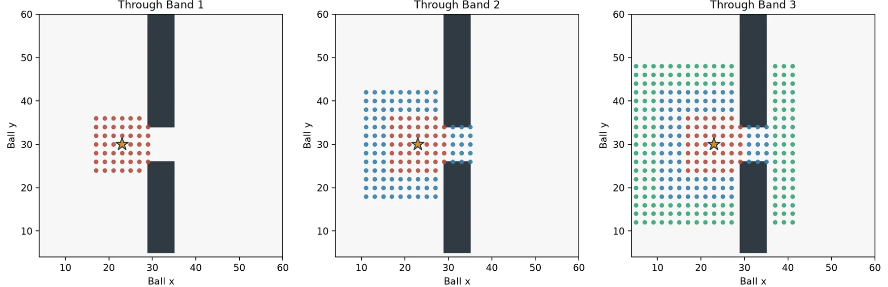
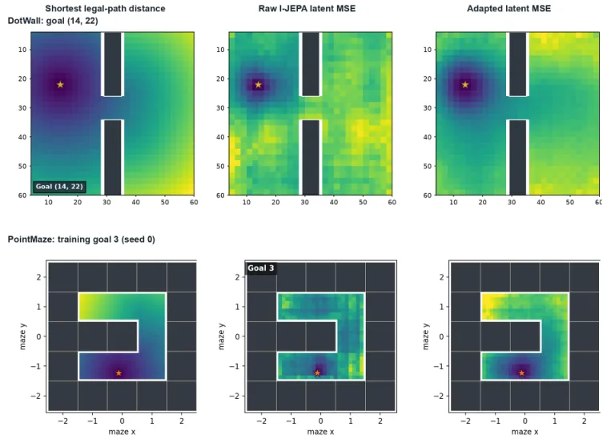

用扩张课程学习视觉世界模型规划中的隐式目标代价
Learning Latent Goal Costs for Visual World-Model Planning with an Expanding Curriculum
一句话：它论证了“预训练嵌入的距离不是可到达性”，并用一个恒等初始化的残差适配器 + 沿轨迹时序的排序损失，把冻结编码器的代价场重新校准成近似“沿合法路径的进度”。规模很小（两个 2D 玩具环境），但诊断指标做得很干净：成对排序一致率、跨墙排序、Spearman、门口局部“上坡步”比例。
DotWall success
Pair ordering on unseen layouts
Doorway-local uphill steps
作者、单位与技术谱系 · Research context
作者与单位
研究脉络
- DINO-WM方法基座关系：问题设定（冻结预训练视觉编码器 + 动作条件世界模型 + 图像目标 CEM 规划）直接沿用 DINO-WM 一脉，本文只是把编码器换成 I-JEPA 并修改代价。[论文 §I、§II、§III-A]
- Temporal Straightening上游对照关系：同样针对“隐式代价不反映可达性”，但走的是训练编码器/预测器让轨迹在隐空间变直的路线；本文明确选择不动编码器。[论文 §II 与参考文献 [14]]
- 本篇推进：从成功信号学进度，而非从测地距离学本篇推进关系：把“进度监督”从人工定义的测地距离换成轨迹顺序这一弱信号，使方法不绑定具体任务。[论文 §IV]
合作网络
- Mylonas ↔ Spyropoulos（同机构共同署名）Konstantinos Mylonas → Thrasyvoulos Spyropoulos关系：共同署名[论文首页作者与单位]
- 本篇 ↔ I-JEPA（Meta）Latent Goal Costs（本篇） → I-JEPA ViT-H/14 预训练权重关系：技术依赖[论文 §III-A]
- 本篇 ↔ DINO-WMLatent Goal Costs（本篇） → DINO-WM（Zhou 等，2025）关系：技术依赖[论文 §I、§III-B 与参考文献 [3]]
本篇为单机构双作者，未发现跨机构合作边；两条技术依赖（I-JEPA 权重、DINO-WM 设定）均写在正文，不涉及人物关系推断。
方法本质拆解 · What actually changed
是不是微调？
只训练适配器 A_θ（一个小残差 MLP，64 维瓶颈），I-JEPA 编码器与世界模型完全冻结，规划器（CEM）也不训练。训练样本来自采集阶段产生的成对比较：成功轨迹按时序构造“后者更优”的对，失败轨迹按与成功路线的代价接近度排序后构造对；DotWall 用 6,121 次 rollout 得到 5,721 条成功 episode，PointMaze 用 632 条采集 episode、4 个训练目标。
有没有额外约束？
适配器恒等初始化，保证起点就是原始 MSE 规划；代价只在“预测末端嵌入 vs 目标嵌入”的路径上使用，世界模型的输入仍是未修改的编码器嵌入，因此动力学不被污染。课程给出一条采样约束：每个阶段只从目标周围的方带内取起点（DotWall 半宽 6→48、步长 6），带只约束起点、不限制 episode 活动范围。数据清洗上还加了“回到早前位置就剪掉环路”与“丢弃未变化的观测”两条规则。
推理/后端到底做了什么？
推理就是原来的 CEM-MPC：每步在世界模型里 rollout 候选动作序列、用适配后的末端代价打分、执行第一个动作、取新观测再规划，没有额外的优化后端、没有图优化、也没有搜索树。适配器在推理时同时作用于候选嵌入与目标嵌入，因此不改变规划器的搜索空间与超参，只改变打分几何。
方法本质是什么？
本质是把“进度”从视觉相似度里解耦出来：不改表征、不改动力学，只改代价函数的几何，让代价沿合法路径单调下降。它没有做的是：没有证明适配后的代价是任何意义上的度量（无三角不等式、无理论保证），也没有解决长时 rollout 的误差累积——那仍由世界模型决定。
输入冻结 I-JEPA 嵌入 + 冻结世界模型 + 目标图像，改变的是规划器使用的目标代价几何，动作是在代价路径上加恒等初始化的残差适配器并用轨迹时序/失败对比做排序学习，直接效果是跨障碍情形的规划成功率从 54% 提到 98% 且代价场在未见布局上更接近最短合法路径。

桥接价值Bridge
桥接价值
它把一个我们熟悉的问题讲清楚了：预训练表征的欧氏距离衡量的是“看起来像不像”，而不是“走过去有多难”，因此在有障碍的拓扑里会系统性误导贪心搜索（隔墙的状态代价低但必须绕门）。这对任何用学习描述子做相似度的地方都成立——回环候选、地点识别、跨视角匹配都遇到“相似但不可达/不可信”的假阳性。它的解法也很轻：不改编码器、不改动力学模型，只在“打分路径”上加一个残差适配器，用轨迹顺序做弱监督；这种“只重标定代价、不重训表征”的路线，成本远低于重训编码器。
方法与模块Method
方法摘要
世界模型侧全部冻结：I-JEPA ViT-H/14 把 224×224 图像切成 256 个 patch、每个 1280 维；动作条件预测器 F 接收当前嵌入、球的本体状态与动作，预测下一帧嵌入与状态，训练时与真实下一帧编码比对。规划用 CEM：候选动作序列在世界模型里 rollout，末端预测嵌入与目标嵌入的 MSE 作为代价，只执行第一个动作后重规划。适配器 A_θ 是共享的残差 MLP（64 维瓶颈、恒等初始化），只作用在代价计算路径上，对预测嵌入与目标嵌入同时施加，于是初始状态等价于原始 MSE 规划。训练信号来自轨迹顺序：同一条成功轨迹上后访问的观测应对目标有更低的适配代价；失败轨迹则按“与同目标成功路线的代价接近程度”排序后构造成对样本。课程按“起始状态的同心方带”扩张：DotWall 用 8 个带（半宽 6→48、步长 6），每带三轮“采集—拟合”。
可迁移模块
第一是“恒等初始化的残差适配器”：它保证上线前后行为连续（初始等于原代价），失败可回退，也不需要改下游规划器——这在我们给现有相似度打分器做在线校准时可复用。第二是排序损失的形式：L=max{0, m + c(l) − c(e)}，只要求“较好的样本代价更低一个 margin”，不要求绝对尺度，适合只有相对顺序而没有真值的场景。第三是评估口径：成对排序一致率（全图 / 跨障碍）、Spearman ρ、以及“门口局部上坡步比例”（沿合法路径前进却使代价升高的步占比），这三个量能直接用来诊断我们自己的代价场。

证据Evidence
关键证据与数字
DotWall（50 个配对案例、10 个留出目标、100 步上限）：原始 I-JEPA 代价 27/50（54%）→适配后 49/50（98%）；同房间 21/25→25/25，跨房间 6/25→24/25，直线路径被墙挡住的情形 4/23→22/23；原本成功的 27 例全部保持成功，适配器新增 22 例。PointMaze（50 例）：41/50（82%）→48/50（96%），25 个局部案例两者全对，增益集中在绕中央墙的绕行（16/25→23/25，其中对面臂子集 13/21→19/21）。未见布局（16 个布局-目标组合、每例渲染 688 个合法位置）：全图成对排序 71.9%→85.8%，跨墙排序 48.5%→77.1%，平均 Spearman 0.594→0.864，门口局部上坡步 39.2%→15.6%。
边界与下一步Limits & Next Step
边界与风险
作者明确承认：方法需要目标成功信号与每个带内足够的起始覆盖，状态维数升高后所需起点数会迅速膨胀（维数灾难），课程可能变得昂贵或稀疏；时序顺序只是弱标签，成功路线也会绕路，失败轨迹的排序又依赖当前适配器（存在自我循环）。我们另需核验：所有实验都在 2D 玩具环境（球的 x,y），没有三维、没有真机、没有视觉外观变化；50 例配对评测的置信区间未报告，98% 与 96% 的差距在样本量下是否显著未知；“适配器可迁移到其他任务”只在同一任务的新布局上验证过，跨任务未测。此外“门口局部上坡步”是作者自定的诊断量，其阈值（近门口的定义）在正文没给细目。
下一步实验
第一，把这个适配器搬到我们自己的地点识别/回环相似度上：固定特征与检索流程，只训一个残差 MLP 让“沿轨迹更靠后的帧代价更低”，然后看回环候选的排序是否更接近真实可达性、假回环是否减少。第二，把课程从 2D 扩到 (x, y, yaw) 并量化样本爆炸：测每个带需要的起点数随维数的增长率，判断这套方法在三维位姿空间是否还划算。第三，做阈值敏感性：只改 margin m 与瓶颈维度，画“排序一致率—下游成功率”曲线，确认收益来自代价几何而不是容量。







